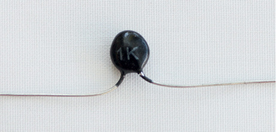
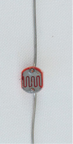

Electronic components 2
Figure 1:
Components connected on a printed circuit board
Figure 2: Measuring the resistance of
a thermistor at room temperature.
Figure 3: Measuring the resistance of
a thermistor while heating it with a hot object. You can
heat a metal thumb tack by pressing it into an eraser, and
then rubbing it hard against a piece of wood or plastic for
one minute.
Safety
warning: The thumb tack can get very hot and burn
your skin, which can cause a wound.
LDR, is a
resistor of which the resistance
decreases when it is exposed to
light of a higher intensity. It can therefore be used to detect
light and trigger warning devices in cases where light may
cause problems.
When an
LDR is in the dark, its resistance value will be very high,
around 1 MΩ.
When an
LDR is exposed to a light of high intensity, the resistance
value will decrease. It could drop from 1 MΩ to 2
kΩ.
|

|
|
|
Figure 4: A light-dependent
resistor
|
Figure 5: The circuit symbol for
a light-dependent resistor
|
Circuit of a
day/night switchnpn transistor is the control
device, and an LED is the output device.

Figure 6: Circuit diagram of a day/night
switch
A
"negative-temperature
coefficient" type thermistor, where the resistance
value decreases with an increase in temperature. This is also
called an "NTC" or "-T" thermistor.
A
"positive-temperature
coefficient" type thermistor, where the resistance
value increases with an increase in temperature. This is also
called a "PTC" or "+T" thermistor.
|

|

|
|
Figure 7: A thermistor
|
Figure 8: The circuit symbol for
a thermistor
|
Measuring the
resistance of a thermistorHeat-activated
switch
Figure 9: Diagram of a simple fire
alarm with an NTC thermistor

ecause the farad is such a large unit,
practical values usually have the prefixes m (milli-),
µ (micro-), n (nano-) or p (pico-).
|

|
|
|
Figure 10: Different types of
capacitors
|
Figure 11: The circuit symbol for
a capacitor
|
Charge and discharge
of a capacitor1, through the
switch to one plate of the capacitor. The negative of the
battery is connected to the other plate of the capacitor
through the resistor R
1. While the capacitor is
charging, LED
1 will
be ON.

Figure 12: Capacitor charging and
discharging circuit
2, and will discharge through
the resistor R
1.
While the capacitor is discharging, LED
2 will be ON.
|
Name of
component
|
Picture
|
Symbol
|
Use
|
|
|
|
|
|
|
|
|
|
|
|
|

|
|
|
|
|
|
|
|
|
|

|
|
|
|
|
|

|
|